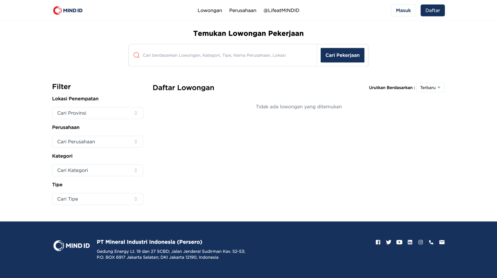
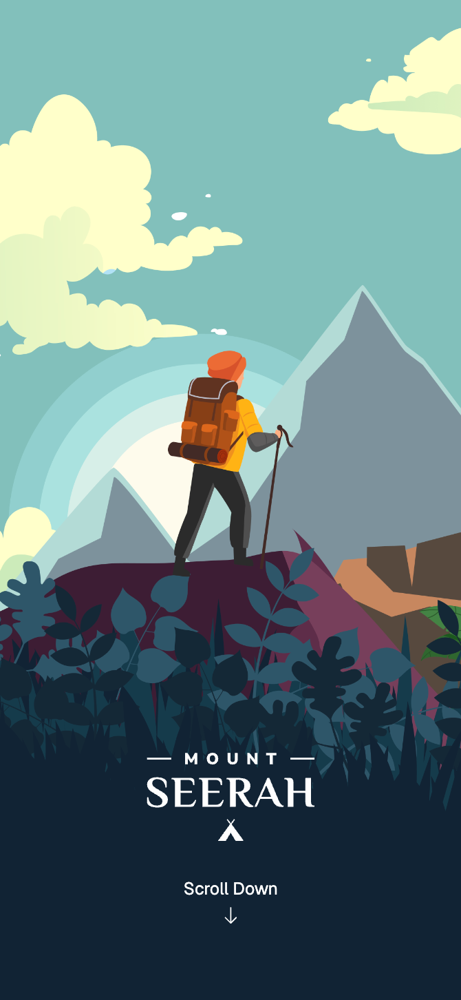
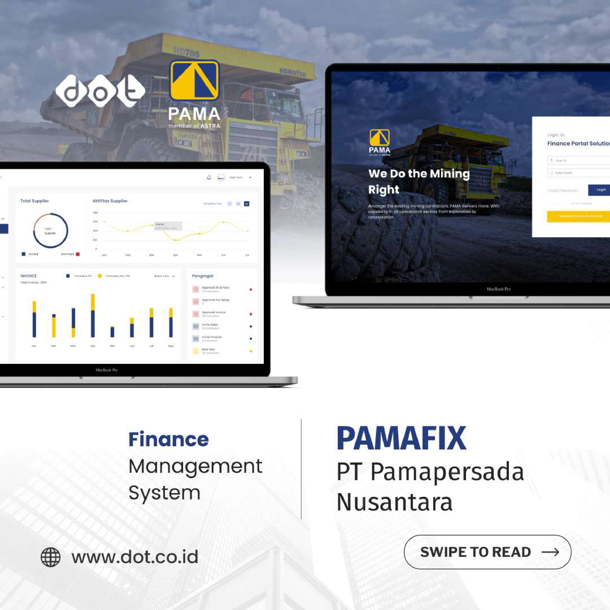
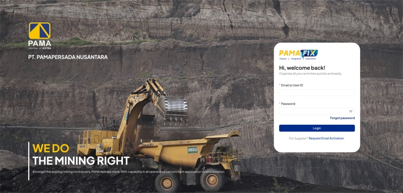

Sample Test Case
Functional and regression coverage for an enterprise invoice approval flow, including preconditions, test data, expected results, and evidence to capture.
Open artifact →Hi, I'm
Quality Assurance Engineer
I help teams ship reliable enterprise software through risk-based test planning, API and UI automation, performance validation, clear defect reporting, and release-quality gates.
QA Engineer with 4+ years of experience validating enterprise web, finance, recruitment, procurement, and SAP-integrated applications. My work covers manual testing, API testing, UI automation, performance testing, defect triage, UAT support, and release readiness.
Sanitized public samples that show my QA thinking: test design, defect evidence, API coverage, performance findings, and release readiness without exposing confidential company data. Company repositories are private, so these artifacts are public samples of my QA process rather than client source code.
Functional and regression coverage for an enterprise invoice approval flow, including preconditions, test data, expected results, and evidence to capture.
Open artifact →Bug report format with business impact, reproducible steps, actual versus expected result, suspected area, and retest notes.
Open artifact →API regression matrix for authentication and invoice workflows, including authorization checks, payload validation, and CI quality gate criteria.
Open artifact →Performance test summary with p95/p99 thresholds, error-rate analysis, release decision, and follow-up recommendations.
Open artifact →Release-readiness checklist covering functional coverage, API integration, automation, performance, defects, UAT, and QA sign-off.
Open artifact →A concise example of how I approach high-risk enterprise releases: identify business risk, design layered coverage, collect evidence, and support a clear release decision.
Sanitized case study based on enterprise finance workflows with invoice handling, approvals, reporting, and SAP-related API integration.
Multiple Enterprise Projects
Led quality assurance initiatives for enterprise-level projects including SAP-integrated finance application and recruitment portal. Managed testing team, established comprehensive QA processes, coordinated testing strategies, and ensured quality standards across multiple projects.
Multiple Enterprise Projects
Conducted comprehensive manual and automated testing for various enterprise applications including recruitment portals, educational platforms, procurement systems, and finance applications. Developed test automation frameworks using Playwright, Mocha & Chai, and performed performance testing with K6.
DOT Indonesia x Intermedia Amikom x Nest Academy
Issued: July 2023
Credential ID: TKIRENDH5H
Skills: Public Speaking, Manual Testing
Participated in TechTalk event focusing on Quality Assurance fundamentals and practical implementation of Sentry for manual testing workflows.
View Certificate →Cakap
Issued: September 2024
Credential ID: 88AABH29F7
Skills: English Communication
Completed English language training program focused on professional workplace communication and business English skills.
View Certificate →
Role: QA Engineer & QA Lead
Web-based application supporting end-to-end job application process with backoffice management for HR teams.
Leadership Role: Led quality assurance initiatives and coordinated testing strategies for the recruitment platform.
Mind ID Recruitment Portal is a web-based application developed to support the end-to-end job application process within the Mind ID ecosystem. The platform provides a centralized portal where candidates can explore job opportunities, submit applications, and track their recruitment progress online.
In addition, the system includes a backoffice management module that enables HR teams to manage job postings, review candidate submissions, monitor recruitment pipelines, and handle administrative workflows efficiently.
Note: Source code and repository links are not shared, as the project resides in the company's private repository.

Role: QA Engineer
Student learning platform with interactive quizzes and gamified rewards system.
Mountseerah is a web-based student application combined with a backoffice management system, designed to support interactive learning experiences through quizzes and gamified rewards. The platform allows students to participate in quiz sessions, submit answers online, and earn virtual items as rewards when completing challenges correctly.
The backoffice module enables administrators and educators to manage quiz content, monitor student progress, and maintain the overall learning workflow efficiently.
Note: Source code and repository links are not shared, as the project resides in the company's private repository.

Role: QA Engineer
Procurement application with Office 365 integration for automated digital signing.
This web-based procurement application was developed to support and streamline procurement processes within Pertamina, enabling more efficient management of purchasing workflows, vendor coordination, and document approvals.
The platform integrates with Office 365 to provide an automated digital signing process, allowing procurement documents to be signed and validated electronically. This integration helps reduce manual paperwork, accelerates approval cycles, and ensures secure and compliant handling of official procurement documentation.
Note: Source code and repository links are not shared, as the project resides in the company's private repository.

Role: QA Engineer
Enterprise finance application with SAP integration and modular architecture.
Pamafix is an enterprise finance application designed to streamline financial operations through seamless integration with SAP systems. The platform supports critical processes such as invoice management, transaction tracking, and financial reporting, ensuring accuracy and efficiency across business workflows.
The application is built with a modular architecture, allowing financial components to be developed and maintained independently while ensuring reliable integration across the platform. This approach improves scalability, maintainability, and system flexibility.
Note: Source code and repository links are not shared, as the project resides in the company's private repository.

Role: QA Engineer & QA Leader
Enterprise finance application with microservices architecture.
Leadership Role: Led quality assurance team and established comprehensive testing strategies for this enterprise-level project.
Pamafix is an enterprise finance application designed to streamline financial operations through seamless integration with SAP systems. The platform supports critical processes such as invoice management, transaction tracking, and financial reporting, ensuring accuracy and efficiency across business workflows.
The application is built using a microservices architecture, allowing each financial module to operate independently while maintaining reliable communication between services. This approach improves scalability, maintainability, and system flexibility.
Note: Source code and repository links are not shared, as the project resides in the company's private repository.

Role: QA Engineer
End-to-end test automation for enterprise reporting system using Playwright and TypeScript.
This project showcases end-to-end test automation for the Pama Management Report application using Playwright. The automation framework is structured with dedicated folders for tests, pages, fixtures, utilities, and documentation, following a maintainable and scalable approach for web testing.
The project uses TypeScript configuration (playwright.config.ts) and supports environment-based setup via .env.example, enabling consistent test execution across different environments. Test coverage focuses on critical user flows and reporting features within the Pama Management context.
These artifacts demonstrate QA ownership of automation design, implementation, and maintenance for enterprise reporting systems, aligned with modern testing best practices and continuous integration workflows.
Note: Source code and repository links are not shared, as the project resides in the company's private repository.

Role: QA Engineer
Performance and load testing for SAP-integrated finance application using K6.
This project documents load and performance testing for the Pamafix SAP application using K6. The tests validate system behavior under concurrent load, measuring HTTP request duration, success rates, and custom thresholds to ensure the platform remains stable and responsive for end users.
Test scenarios include master-data and notification flows, with metrics tracked for response times (e.g. p95, p99), error rates, iterations per second, and network usage. Thresholds are defined so that failures (such as p99 exceeding 3 seconds) cause the test run to exit with a non-zero code, supporting CI/CD quality gates.
These materials illustrate QA involvement in performance testing strategy, threshold definition, and result analysis for enterprise finance systems integrated with SAP.
Note: Source code and repository links are not shared, as the project resides in the company's private repository.

Role: QA Engineer
API and workflow automation for investor meeting management system using Mocha and Chai.
This project presents API and workflow automation for the RUPS (Rapat Umum Pemegang Saham) management and investor-facing system using Mocha and Chai. The tests cover authentication, role management, file upload, and attendance confirmation for individual representatives in meeting-management flows.
Test execution is organized by meeting ID and targets endpoints such as sign-in, available roles, attendance confirmation status, and file upload, with assertions on response status codes and payload validity. Passing and pending cases are clearly reported to support regression and release confidence.
These artifacts demonstrate QA ownership of test automation design and execution for regulatory and governance-related applications in an investor-management context.
Note: Source code and repository links are not shared, as the project resides in the company's private repository.

Role: QA Engineer
Test automation suite for SAP-integrated finance application using Mocha and Chai with GitLab CI.
This project covers test automation for the Pamafix SAP application using Mocha and Chai. The automation suite is structured with runners, test modules, payloads, and utilities, and is integrated into the development workflow via GitLab CI (e.g. .gitlab-ci.yml) for consistent execution on code changes.
Tests focus on critical business flows such as invoice handling, approval steps, and internal versus external fix scenarios, with environment-specific configuration supported through .env files. The project is maintained alongside ongoing feature work, as reflected in recent merge and conflict-resolution activity.
These materials illustrate QA involvement in building and maintaining automated regression and integration tests for the enterprise finance and SAP-integrated Pamafix platform.
Note: Source code and repository links are not shared, as the project resides in the company's private repository.
February 23, 2026 • DOT Blog
How I built an AI-powered framework that converts UI recordings into production-ready Playwright tests, reducing test creation time by 90% with smart session management and Page Object Models.
Read on Medium →October 28, 2024 • DOT Blog
Panduan lengkap load testing dengan K6 untuk memastikan performa API tetap stabil ketika diakses ribuan pengguna secara bersamaan.
Read on Medium →November 7, 2022 • DOT Blog
Memanfaatkan Sentry sebagai software monitoring untuk memantau error dan memahami issue yang terjadi pada aplikasi secara real-time.
Read on Medium →March 3, 2021 • Medium
Menggunakan fitur Issue Boards pada GitLab untuk task management dan kolaborasi tim yang lebih efisien dalam pengembangan aplikasi.
Read on Medium →March 3, 2021 • Medium
Panduan praktis menggunakan Cypress untuk automation testing dengan eksekusi cepat, debugging mudah, dan hasil yang konsisten.
Read on Medium →For the fastest response, contact me through LinkedIn or GitHub. This form is a front-end validation demo; use the direct links below for real hiring or collaboration messages.